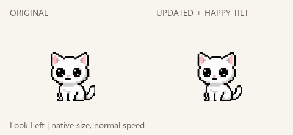
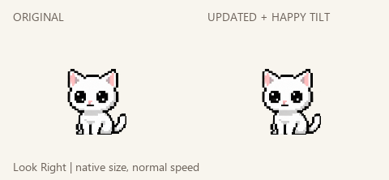
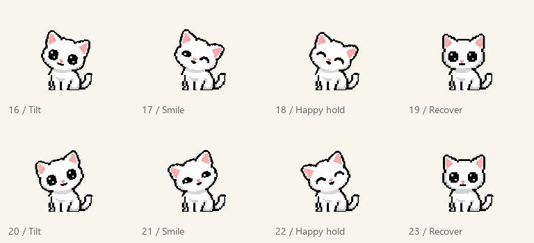

A little look, a happy little tilt.
Original on the left, updated glance with the new tilted smile on the right. Native desktop size and normal speed. Both directions get their own drawn tilt; her seated body and tail stay planted.
Look left

Look right

The pleased tilt holds600ms, then she straightens through drawn poses. Each gesture runs4.9s once; these previews repeat for review.

Resting breathing, original quiet tail swish and tail chase/catch are unchanged.
Sources, checks and remaining limits